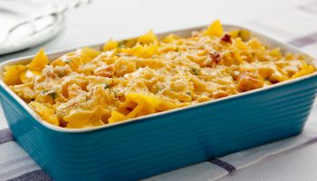

Macarrão Gratinado com Cheddar e Bacon
Ingredientes
- 300g de macarrão (tipo penne ou fusilli)
- 200g de queijo cheddar ralado
- 100g de bacon picado
- 1 xícara de creme de leite
- Sal e pimenta a gosto
Modo de Preparo
- Cozinhe o macarrão em água salgada até ficar al dente.
- Enquanto o macarrão cozinha, frite o bacon até ficar crocante e reserve.
- Escorra o macarrão e misture com o creme de leite e o queijo cheddar ralado.
- Transfira para uma assadeira e cubra com o bacon frito.
- Leve ao forno a 180°C por 20 minutos ou até o queijo derreter e dourar.
- Sirva quente!
Dicas
Experimente adicionar um pouco de parmesão para um sabor extra!